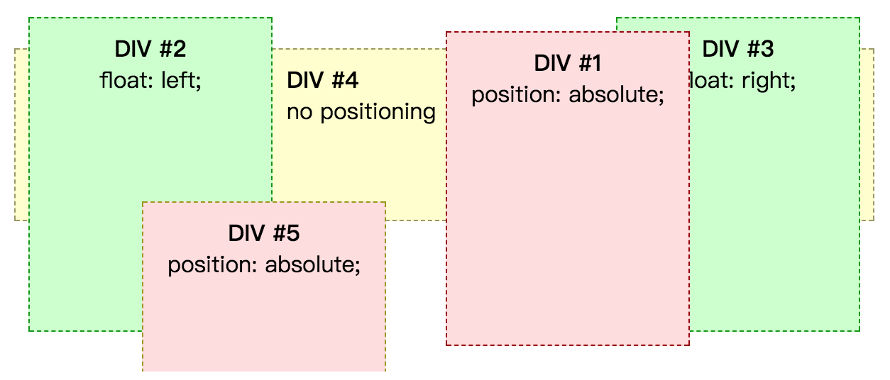
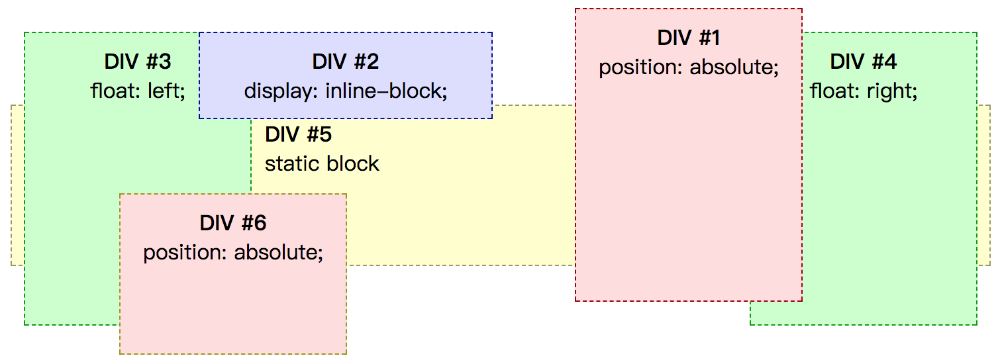

深入了解 z-index
概述
从视觉上来看，页面是在一个平面内显示的。但实际上，页面中所有的元素的显示是有层级顺序的。我们可以使用负 margin 简单模拟下，让两个元素发生重叠，这会导致一个元素盖在另一个元素的上面，这就形成了层级。所以其实每个元素盒子都是在一个三维空间定位位置的，这个 Z 轴方向上的层级我们暂且叫做 stack level，stack level 的层级权重越高就越在前面。如下图，就是一个简单的多个元素层级覆盖的效果：

当然实际情况肯定没有这么简单了，除了 stack level 之外，其实还有一个叫做 stacking context 的东西来限制 stack level 的作用范围。
下面举个不是很恰当的例子，来辅助理解下它们的关系。
假如有三个学生 A、B、C。A、B 在甲班，C 在乙班。有一次考试，A、B 在甲班级上排名分别是3、10，C 在乙班排名是5。
我们可以很容易得出 A 的成绩比 B 的排名靠前，但是因为班级不同，我们不能直接比较 A/B 与 C 的排名，如果要比较 A、B、C 三个的排名，只能跨越班级，再来比较。
一个人的学习成绩排名，有班级，学校，区，城市等来限制。同样我们元素的层级排序 stack level 的限制就是 stacking context，所有的 stack level 排序都必须放在同一个 stacking context 中比较才有意义，而一个页面中往往有很多个 stacking context，所以元素的层级排序就没那么简单了。
Stacking context（堆叠上下文）
首先根元素 HTML 会创建一个堆叠上下文，除此以外，还有很多 CSS 属性都可以创建一个新的堆叠上下文。如下任意一个场景都可以创建一个堆叠上下文：
- Root element of document (HTML).
- Element with a position value "absolute" or "relative" and z-index value other than "auto".
- Element with a position value "fixed" or "sticky" (sticky for all mobile browsers, but not older desktop).
- Element that is a child of a flex (flexbox) container, with z-index value other than "auto".
- Element with a opacity value less than 1 (See the specification for opacity).
- Element with a mix-blend-mode value other than "normal".
- Element with any of the following properties with value other than "none":
- transform
- filter
- perspective
- clip-path
- mask / mask-image / mask-border
- Element with a isolation value "isolate".
- Element with a -webkit-overflow-scrolling value "touch".
- Element with a will-change value specifying any property that would create a stacking context on non-initial value (see this post).
具体可参考：The stacking context
PS：由于有些翻译可能会造成理解误差，所以干脆就上英文标准。
Stack level（堆叠层级）
在同一堆叠上下文中，堆叠层级顺序如下递增：
- the background and borders of the element forming the stacking context.
- the child stacking contexts with negative stack levels (most negative first).
- the in-flow, non-inline-level, non-positioned descendants.
- the non-positioned floats.
- the in-flow, inline-level, non-positioned descendants, including inline tables and inline blocks.
- the child stacking contexts with stack level 0 and the positioned descendants with stack level 0.
- the child stacking contexts with positive stack levels (least positive first).
大概翻译为：
- 创建堆叠上下文环境的元素的背景与边框
- 拥有负 z-index 的创建了堆叠上下文的子元素 （负的越高越堆叠层级越低）
- 常规流布局中，非行内级，无 position 定位（static 除外）的子元素
- 无 position 定位（static除外）的 float 浮动子元素
- 常规流布局中，行内级，无 position 定位（static 除外）的子元素
- stack level 为 0 的 position 定位（static 除外）的子元素
- stack level 为正值的position 定位的子元素（z-index 正值越大就越高）
下面我们开始验证同一个堆叠上下文中的堆叠层级规则。
没有 z-index 属性
在元素的 position 计算值为 static 值时，其层级顺序大概如下递增：
- 块级元素
- float 元素
- 行内级元素
- position 定位（非 static 值）元素
在线 demo ：没有 z-index 属性的元素堆叠层级顺序。效果图如下：

设置 z-index 属性
z-index 属性用来表示一个具有定位属性的元素及其子代元素的 Z 轴上的层级。它指定了：
- 元素在当前堆叠上下文中的堆叠层级。
- 元素是否创建一个新的本地堆叠上下文。
特别强调：z-index 只作用于 position 属性值为非 static 的元素，对static 元素设置 z-index 值是没有任何意义的。
其取值有：
auto: the stack level of the generated box in the current stacking context is 0. If the box has 'position: fixed' or if it is the root, it also establishes a new stacking context.<integer>: this integer is the stack level of the generated box in the current stacking context. The box also establishes a new stacking context.
大概的意思就是：如果为 auto ，则其堆叠层级为 0，且不会创建一个新的堆叠上下文，除非为 fixed 元素或根元素；如果为 <integer>，则该数值就是
该元素在其当前堆叠上下文中的堆叠层级，同时该元素会创建一个新的堆叠上下文，其子元素的堆叠层级将根据新的堆叠上下文进行排序。
下面几个来自 MDN 的具体实例，可以帮助你深入理解 z-index 层级设置：
auto 与 0 的区别
虽然 auto 值和 0 值的 stack level 都为 0，但是 0 值肯定会创建一个新的堆叠上下文，而 auto 值则不会创建一个新的堆叠上下文（除非是fixed元素或根元素），所以它们还是有区别的。而创建一个层叠上下文之后，其子元素的层叠顺序就相对于父元素计算，不会与外部元素比较。这样说比较抽象，我们来看个例子。
<div class="dog-container">
<img class="dog" src="http://coding.imweb.io/img/p3/z-index/dog.png" alt="dog">
</div>
<div class="cat-container">
<img class="cat" src="http://coding.imweb.io/img/p3/z-index/cat.png" alt="cat">
</div>
img {
width: 200px;
}
.dog-container {
width: 200px;
height: 100px;
background: red;
position: relative;
z-index: auto; /* 默认值auto */
}
.dog {
position: absolute;
top: 10px;
left: 100px;
z-index: 2;
}
.cat {
position: absolute;
top: 80px;
left: 70px;
z-index: 1;
}
上面例子中，我们给 .dog 和 .cat 增加了容器 .dog-container 和 .cat-container, 并且 .dog 和 .cat 都设置了 z-index 值，所以都显示在红色背景的 .container 之上，而且 .dog z-index 数值比较大，所以显示在上面。

但是当我们设置了 .dog-container 的 z-index 属性值为0之后，我们发现，z-index 值比较大的 .dog 元素反而到 z-index值比较小的 .cat 下面了
.dog-container {
width: 200px;
height: 100px;
background: red;
position: relative;
z-index: 0; /* 将 z-index 值改成0 */
}
效果：

其原因就在于我们给 .dog-container 设置了 z-index:0 之后，.dog-container 就创建了自己的层叠上下文，其子元素 .dog 在比较层叠顺序的时候只会在 .dog-container 内比较，而不会与外面的 .cat 比较。如下图所示:

总结
如果要比较两个元素的层级，首先要确定它们的堆叠上下文。
- 如果在同一个堆叠上下文中进行比较，则直接按照堆叠层级的7条规则进行比较。
- 如果不在同一个堆叠上下文（如 A 元素与 B 元素的父级元素在同一个堆叠上下文或 A、B 元素的父级元素在同一个堆叠上下文），则向上找父级元素，直接找到它们在同一个堆叠上下文，再按照堆叠层级的7条规则进行比较。